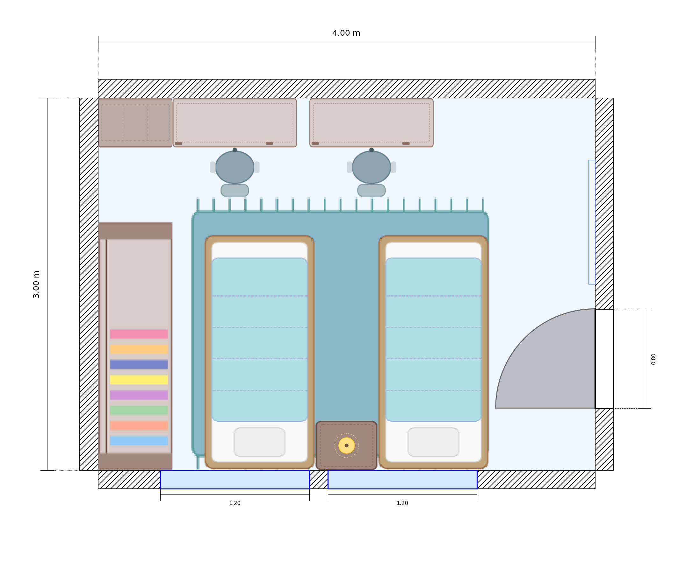
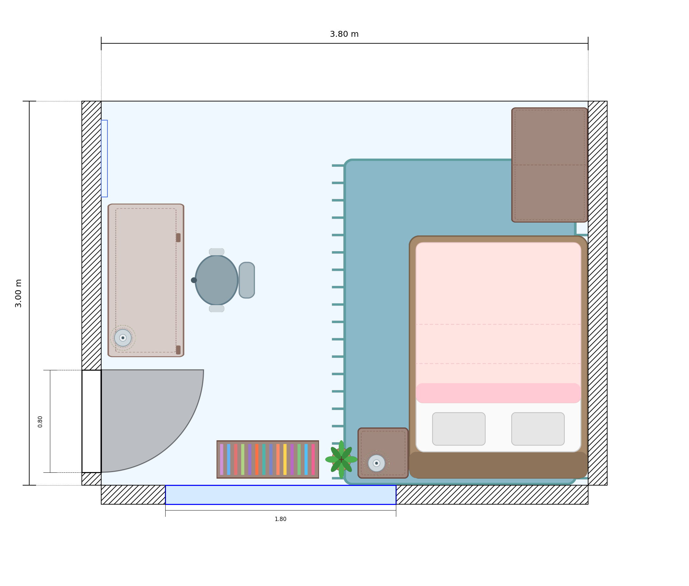
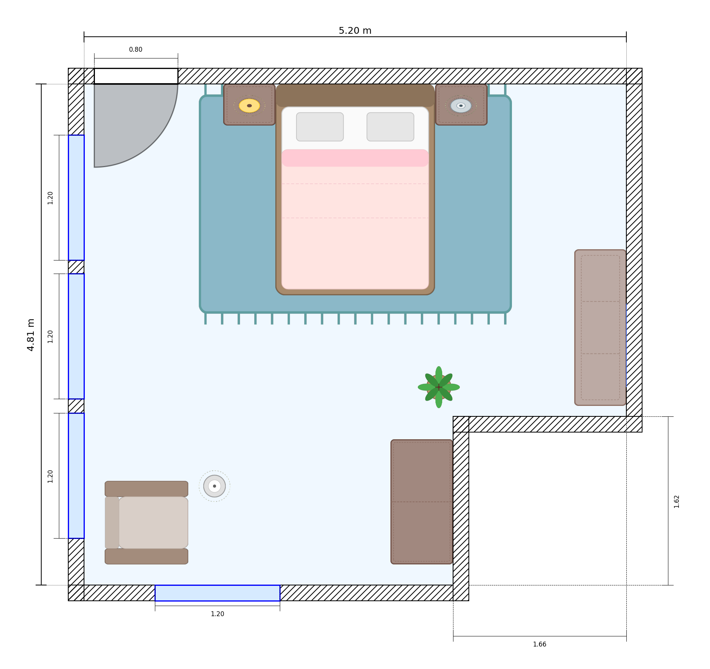
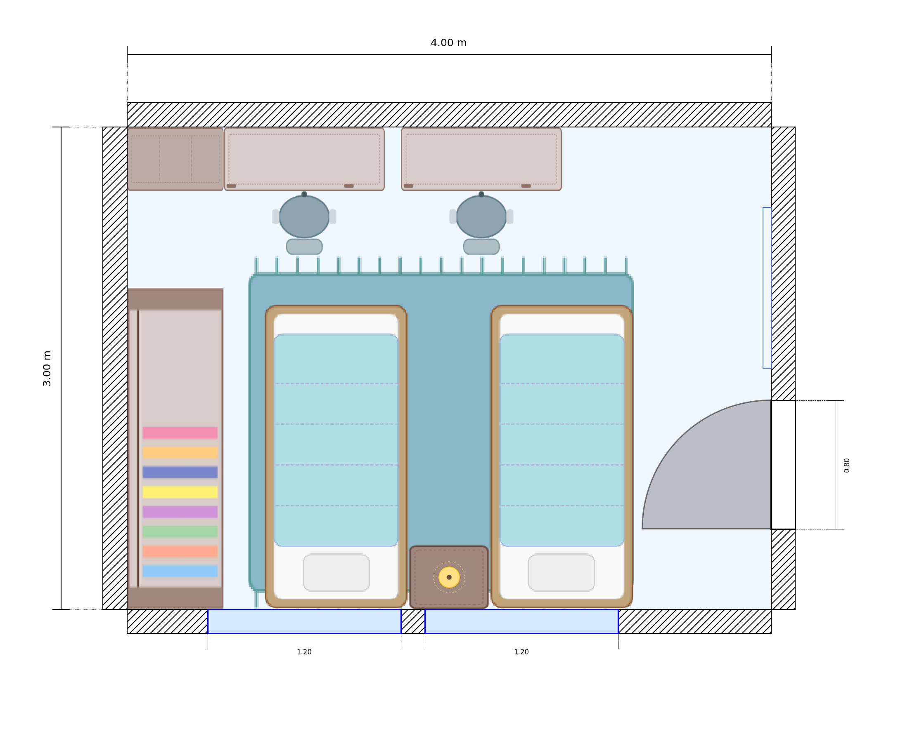
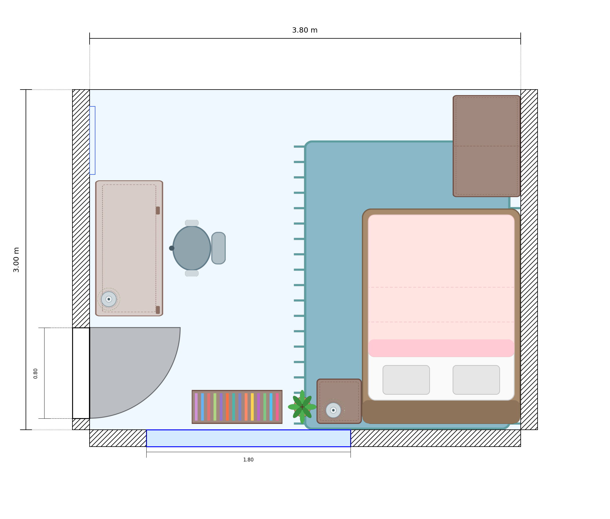
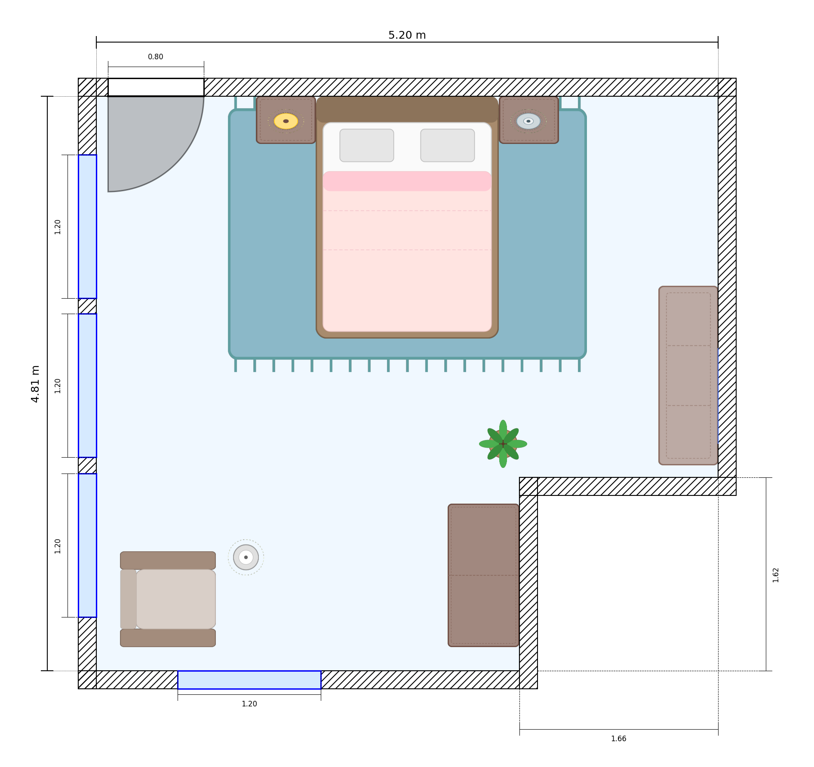

Benchmark Results
| Type | Category | Reasoning | Big Models | Small Models | ||||||||
|---|---|---|---|---|---|---|---|---|---|---|---|---|
| 32.8B | 671B | 671B | 70B | 27.2B | 14B | N/A | 8B | 9.2B | 3.8B | N/A | ||
| 0.6 | 0.6 | 0.3 | 0.0 | 0.5 | 0.0 | 1.0 | 0.6 | 0.5 | 0.7 | 1.0 | ||
 |  | |  | .png) |  | .png) | | | | | ||
| K | Distance | 97.2 | 99.5 | 98.5 | 97.2 | 94.7 | 90.7 | 100 | 82.3 | 74.2 | 35.3 | 97.3 |
| K | Area (counters) | 85.3 | 99.5 | 95.7 | 81.7 | 46.5 | 79.2 | 98.5 | 30.8 | 37.5 | 9.8 | 80.3 |
| K | Free Space | 83.7 | 88.0 | 52.5 | 37.0 | 23.5 | 42.0 | 83.5 | 9.5 | 13.5 | 6.3 | 20.3 |
| K | View Angle | 74.0 | 58.2 | 69.2 | 75.2 | 12.7 | 52.8 | 86.3 | 11.5 | 9.2 | 8.2 | 42.2 |
| K | Repositioning | 91.5 | 96.3 | 69.8 | 48.7 | 14.8 | 22.7 | 85.8 | 3.7 | 6.2 | 11.5 | 40.7 |
| K | Max Box | 33.3 | 30.7 | 9.2 | 8.8 | 3.0 | 3.0 | 57.2 | 1.7 | 1.2 | 1.7 | 3.7 |
| K | Fit/Placement | 92.8 | 92.5 | 71.0 | 66.2 | 72.0 | 82.0 | 89.8 | 68.7 | 71.8 | 68.8 | 70.7 |
| K | Path (Valid) | 13.2† | 6.3† | 39.3 | 30.3 | 23.2 | 26.8 | 73.0 | 10.5 | 17.5 | 14.8 | 35.7 |
| K | Path (Fréchet) | 15.0 | 6.3 | 32.8 | 30.2 | 26.0 | 26.0 | 55.8 | 10.2 | 19.0 | 9.3 | 36.7 |
| K | Missing Object | 87.3 | 88.7 | 44.3 | 56.2 | 52.3 | 52.2 | 79.8 | 27.5 | 39.7 | 14.3 | 58.0 |
| K | Obstruction | 84.0 | 95.2 | 32.7 | 6.0 | 3.3 | 9.7 | 93.5 | 1.2 | 2.7 | 11.3 | 14.2 |
| L | Distance | 98.7 | 99.8 | 99.5 | 98.2 | 96.3 | 98.8 | 99.8 | 87.0 | 81.8 | 58.8 | 98.5 |
| L | Area (sitting) | 96.7 | 99.5 | 84.5 | 98.0 | 83.8 | 88.7 | 99.5 | 32.5 | 41.3 | 12.8 | 85.7 |
| L | Free Space | 0.3 | 4.3 | 1.0 | 0.3 | 3.7 | 0.3 | 5.0 | 0.7 | 3.2 | 1.5 | 1.7 |
| L | View Angle | 81.5 | 86.0 | 70.0 | 76.8 | 14.3 | 50.3 | 96.0 | 14.8 | 8.3 | 10.5 | 42.2 |
| L | Repositioning | 80.5 | 93.0 | 45.0 | 33.5 | 12.8 | 19.2 | 71.5 | 6.5 | 5.7 | 6.3 | 29.3 |
| L | Max Box | 1.5† | 0.8† | 1.0 | 3.0 | 2.0 | 2.8 | 6.5 | 0.8 | 1.5 | 1.0 | 2.3 |
| L | Fit/Placement | 90.7 | 91.2 | 71.5 | 80.0 | 83.7 | 87.7 | 91.8 | 75.0 | 75.5 | 72.8 | 72.7 |
| L | Path (Valid) | 10.0† | 14.7† | 33.0 | 26.7 | 30.5 | 26.7 | 53.2 | 7.3 | 21.7 | 16.7 | 33.5 |
| L | Path (Fréchet) | 13.2 | 14.2 | 23.7 | 17.8 | 19.2 | 14.7 | 48.0 | 2.5 | 14.2 | 6.8 | 25.2 |
| L | Missing Object | 73.0 | 76.2 | 51.0 | 49.3 | 29.5 | 36.0 | 65.5 | 9.7 | 28.3 | 11.7 | 32.3 |
| L | Obstruction | 80.7 | 96.5 | 24.3 | 7.3 | 3.8 | 9.3 | 84.7 | 2.5 | 5.2 | 4.7 | 11.7 |
| B | Distance | 98.7 | 99.8 | 99.5 | 98.2 | 96.3 | 98.8 | 99.8 | 87.0 | 81.8 | 58.8 | 98.5 |
| B | Area (storage) | 98.7 | 99.8 | 94.0 | 97.0 | 86.3 | 88.3 | 99.3 | 30.3 | 66.3 | 47.7 | 88.2 |
| B | Free Space | 1.7 | 5.8 | 1.2 | 0.3 | 2.5 | 1.2 | 2.8 | 1.8 | 1.0 | 1.0 | 1.2 |
| B | View Angle | 76.0 | 79.8 | 70.0 | 78.3 | 10.8 | 57.0 | 94.2 | 15.3 | 10.2 | 7.7 | 43.0 |
| B | Repositioning | 78.7 | 94.3 | 53.8 | 36.0 | 11.2 | 15.7 | 73.7 | 4.3 | 9.0 | 6.5 | 31.5 |
| B | Max Box | 0.7† | 1.0† | 2.0 | 1.8 | 2.0 | 2.5 | 7.2 | 1.0 | 0.7 | 1.0 | 2.0 |
| B | Fit/Placement | 86.3 | 86.3 | 65.8 | 66.7 | 66.5 | 73.0 | 82.0 | 66.0 | 63.8 | 64.7 | 66.2 |
| B | Path (Valid) | 15.5† | 20.8† | 49.7 | 40.7 | 38.5 | 35.8 | 67.8 | 11.3 | 34.5 | 20.5 | 48.8 |
| B | Path (Fréchet) | 15.3 | 21.5 | 30.3 | 30.3 | 27.0 | 19.0 | 49.5 | 3.7 | 19.7 | 8.5 | 36.3 |
| B | Missing Object | 64.3 | 65.2 | 39.8 | 40.3 | 33.0 | 25.2 | 61.0 | 14.8 | 19.7 | 8.3 | 34.5 |
| B | Obstruction | 87.2 | 95.7 | 32.0 | 4.3 | 1.3 | 5.8 | 89.5 | 2.2 | 5.3 | 9.3 | 12.2 |
†High truncation rate due to token limits.
 




